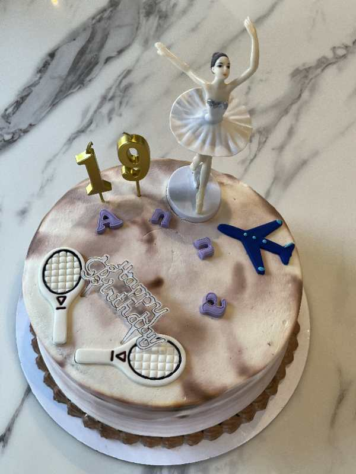
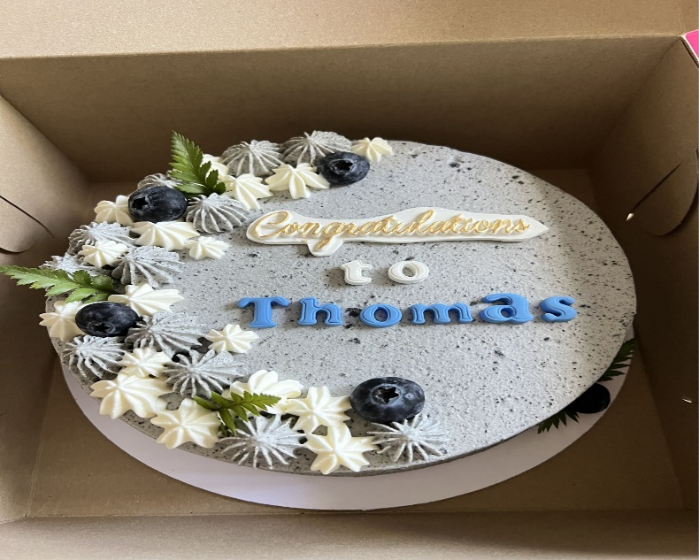

༺ༀ༂末日༒凤凰༂ༀ༻:
万能群友们，请问学校附近有送蛋糕的服务吗？[Grin]
Laura Wang:
Here are some places where parents order treats for their students.
Mad Hatter Bakery one block off of East Campus - www.madhatterbakeshop.com
Insomnia Cookies - https://insomniacookies.com/locations/store/1235
Ollie’s Great Bakery - www.OlliesGreatBakery.com, OlliesGreatBakery@gmail.com
Sweets by Shayda - https://sweetsbyshayda.com/
Ninth Street Flowers is very close to East Campus and delivers -http://www.ninthstreetflowers.com/.
Laura Wang:
Ollie's Great Bakery is one of several bakeries on a list I have gathered over the years that has treats you can order for various occasions and have delivered to campus. Parents have reported good service and students enjoy these treats.
Ollie's continues to deliver to Duke every weekday evening this year, and has expanded its menu to include cakes now!! As always, Ollie's is there for parents to send sweets on holidays, birthdays, exam days, first week of class, last week of class, etc. The bakery number is 919-391-0343 if parents ever have questions!
༺ༀ༂末日༒凤凰༂ༀ༻:
有app就更好了[Grin]
༺ༀ༂末日༒凤凰༂ༀ༻:
Thank you very much[呲牙]
开心果:
@
末日凤凰-27-m-南昌 要中式蛋糕也可以联系这位台湾的妈妈
开心果:
[Contact Card] Cara Kuo郭癸華
༺ༀ༂末日༒凤凰༂ༀ༻:
送到校园吗
奕:
我从她那里订过蛋糕，非常满意
开心果:
༺ༀ༂末日༒凤凰༂ༀ༻:
好的，谢谢。有微信更方便了
奕:
付deliver fee，她会送到宿舍，

༺ༀ༂末日༒凤凰༂ༀ༻:
我以为蛋糕都是西式的[坏笑]
༺ༀ༂末日༒凤凰༂ༀ༻:
中式的是馒头花卷[Chuckle][Laugh]
开心果:
不像美式蛋糕甜的腻[Chuckle]
开心果:
这是她做的芝麻蛋糕，也是前两周我定的
开心果:
莺时:
请问在杜克附近有哪里可以订生日蛋糕吗
李文莉🌸:
Insomnia Cookie,
莺时:
可以线上订吗？娃在学校，我在国内[Lol]
李文莉🌸:
@莺时 可以。我找一下我定的。